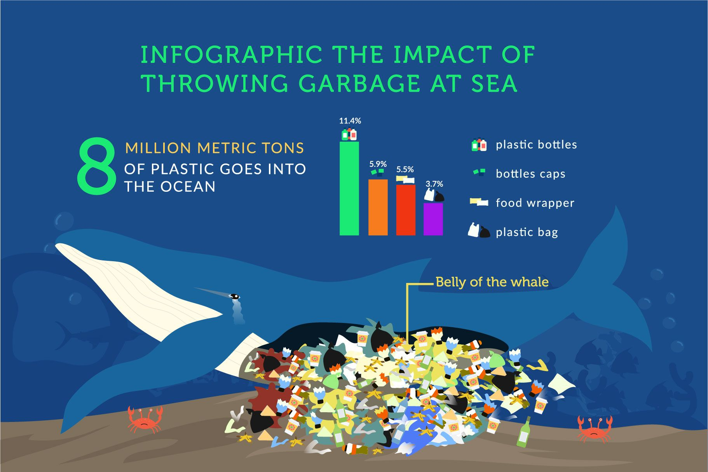

Threats
Oceans face numerous threats including pollution, overfishing, and climate change. These threats not only harm marine life but also affect human communities dependent on marine resources.
Pollution
Marine pollution from plastics, chemicals, oil spills, and untreated sewage severely impacts marine life and ecosystems.
From entanglement and ingestion by marine species to the disruption of food chains, plastic pollution wreaks havoc on marine life. The situation is further exacerbated by the persistence of plastics, which can take hundreds of years to degrade, exacerbating the long-term environmental impact.

Overfishing
Unsustainable fishing practices lead to the depletion of fish stocks, disrupting marine food chains and economies reliant on fishing.
Overfishing threatens the coral reefs.
Overfishing has severe consequences that disrupt marine ecosystems and have far-reaching impacts on the environment. These consequences include trophic cascade, reduced ocean access, dead zones, impaired carbon sequestration, bycatch, and coral reef destruction
Climate Change
Rising ocean temperatures and acidification threaten coral reefs, marine species, and the overall health of marine ecosystems.
Climate change is the greatest global threat to coral reef ecosystems. Scientific evidence now clearly indicates that the Earth's atmosphere and ocean are warming, and that these changes are primarily due to greenhouse gases derived from human activities.
Habitat Destruction
Coastal development, dredging, and destructive fishing techniques damage critical habitats like coral reefs, mangroves, and seagrass beds.
Deforestation far from shore creates erosion, sending silt into shallow waters that can block the sunlight coral reefs need to thrive. Destructive fishing techniques like bottom trawling, dynamiting, and poisoning destroy habitats near shore as well as in the deep sea.
Invasive Species
Non-native species introduced by human activity can outcompete, prey on, or otherwise disrupt local marine species and ecosystems.
Invasive species are usually generalists: species able to survive in a variety of environmental conditions and exploit broad ecological niches. When introduced to a new environment, they can quickly outcompete native species for resources, such as food and water.
Actions
We can take various actions to protect life below water. These include reducing plastic use, supporting sustainable fishing practices, and advocating for marine conservation policies.
Protecting life below water is crucial for maintaining the health of our planet's ecosystems and ensuring the well-being of future generations. Here are some actions we can take to contribute to the protection of marine life:
- Reduce Plastic Use: Single-use plastics are a significant source of marine pollution. By reducing our reliance on these products, we can decrease the amount of plastic waste that ends up in the ocean. This includes using reusable bags, bottles, and containers, and choosing products with minimal packaging.
- Support Sustainable Fishing Practices: Overfishing and destructive fishing methods can devastate marine populations. By choosing seafood from sustainable and responsible fisheries, we can support practices that protect marine ecosystems. Look for certifications like Marine Stewardship Council (MSC) or Aquaculture Stewardship Council (ASC) when purchasing seafood.
- Advocate for Marine Conservation Policies: Governments and international bodies play a crucial role in protecting marine life. Advocating for policies that reduce pollution, protect endangered species, and create marine protected areas can have a significant impact. This can involve writing to representatives, participating in public consultations, or supporting organizations that lobby for marine conservation.
- Participate in Beach Cleanups: Organizing or participating in beach cleanups helps remove harmful debris from coastal areas before it can enter the ocean. This not only improves the aesthetics of beaches but also protects marine life from ingesting or becoming entangled in plastic waste.
- Educate Others: Raising awareness about the importance of protecting marine life is key to fostering a culture of conservation. This can be done through social media, community talks, or by setting a positive example in our daily lives.
- Reduce Carbon Footprint: Climate change is one of the biggest threats to marine life, affecting ocean temperatures, acidity, and sea levels. By reducing our carbon footprint through energy conservation, using renewable energy sources, and supporting climate-friendly policies, we can help mitigate these impacts.
- Support Marine Conservation Organizations: Many organizations are working tirelessly to protect marine life. Supporting these groups through donations, volunteering, or spreading the word about their work can help amplify their efforts.
- Avoid Harmful Chemicals: Many chemicals used in everyday products can end up in waterways and oceans. By choosing environmentally friendly cleaning products, pesticides, and personal care items, we can reduce the pollution of marine environments.
- Respect Wildlife and Habitats: When visiting coastal or marine areas, it's important to respect wildlife and their habitats. This includes not disturbing or feeding wildlife, properly disposing of trash, and staying on designated paths to avoid damaging sensitive ecosystems.
- Invest in Sustainable Businesses: Supporting businesses that prioritize sustainability and environmental responsibility with our purchases and investments can encourage more companies to adopt eco-friendly practices.
We are dedicated to raising awareness and taking action to protect and sustainably manage marine resources. By addressing pollution, promoting sustainable fishing, and supporting conservation efforts, we can ensure the health of our oceans and the prosperity of communities that depend on them.
Join us in our mission to safeguard Life Below Water and contribute to a sustainable future for all.